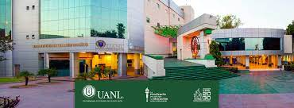

Facultad de Ingeniería Mecánica y Eléctrica (FIME) es una institución educativa de nivel superior y
pertenece a la Universidad Autónoma de Nuevo León.
Cuenta con 11 carreras a nivel Licenciatura, 25 programas de Posgrado y más de 120 cursos de Educación
Continua.234 La FIME cuenta con una planta aproximada de más de 600 maestros, algunos cuentan con perfil
PRODEP, otros pertenecen al Sistema Nacional de Investigadores, varios de ellos con reconocimientos, premios
y certificaciones.5
La facultad cuenta con una importante infraestructura consistente en aulas climatizadas, extensos
laboratorios, salas de cómputo, oficinas, salas de tutorías, estacionamientos, canchas deportivas, etc.
Actualmente la FIME se encuentra certificada bajo la norma ISO 9001:2015, y cuenta con 10 programas de
Licenciatura acreditados por CACEI y en Nivel 1 de CIEES, así como 11 programas de Posgrado en el PNPC.6
